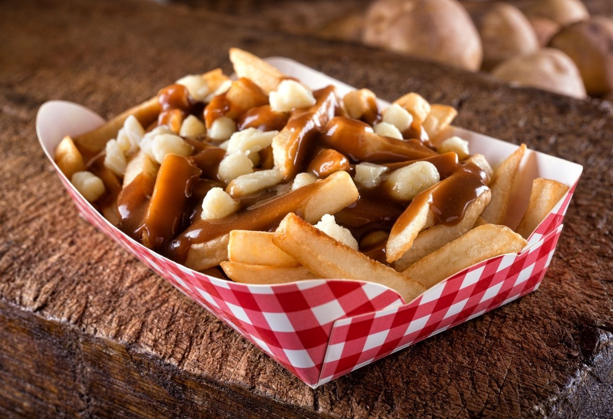

Poutine

Description de la recette :
La poutine est plat quebecois qui se compose de frites et de grains de fromage et de sauce
On s'accorde généralement à dire que son nom viendra du mot anglais "Pudding", qui décrit un mélange collant de
plusieurs ingrédients, dans l'argot quebecois ce mot signie la pagaille, le bazar.
Ingrédients
Etapes
- Frire les frites
- Fondre le fromages
- Mélanger le tout avec de la sauce